British Library, MS Cotton Vespasian E.xvi ()
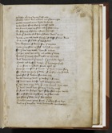Ouerlokes euery lyne vn to þe last ende Burdes werin born a downe . and þe berin rises Calles counceill anone . kithes his speche 4ye ben borin of my blood . þat me best wolde My sonne is next my silve . and oþer sibbe many Sir sabynne of surry . a segge þat I trust And oþer frendes full fele . þat feithe owen to me 8Nowe is me bode worde broght · of blisse frome Rome To be lorde of þat lede . þe lettres speken Sir Sabynne of Surry · sey þe behoves howe I may save my self · and I so wrought 12For I haue holy hight · here for to lende Til þis gates ben gate · and yolden þe keyes Sithen þis touerd town · taken at my wille And venge me on þis hethen · þat þis holde kepyn 16Beten and brusten down · þis bretages higӡ þat no stone in þis steed stonde vpon oþer kythe þi counseiłł sir knyght · þe kyng to hym said For I will wirche by þi wille · yf worship may folowe 20þanne said sir Sabynne · semeliche lord we ben wyes þe with · þi worship to furthir Of longe tyme be laft · and ledes þine own þat we done is þy dede · þere may noman deme elles 24þe doom demed was þere who dos by anoþer he shałł be souerayn hym silve seen in þis werke For as ferfurthe is þe freek . at þe fire ende þat fleis þe felle . as þat foot holdes 28Betakes titus youre sonne . þis towne for to kepe And to þe doughty duke domacian his brothir' 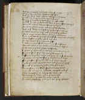And here I holde vp myn honde . with hem for to lende With all þe herte þat I haue . while my lyf lastes 32And þou shalt riden to Rome . and resceiue þe crowne In honoure Emperoure to be . as þine shapes So may þe couenut be kepte þat þou to crist madest þy self hit does þi soudioures doon . be þine assent worchyn 36þanne with a lyons look . he left vp his eyen Turnes to Titus anone . and hym þe tale shewed And as sir Sabynne had said · he hym sone grauntes To biden with his broþer . till þe burgӡ be yolden 40I shall tarye on this towne . til I hit taken haue And maad weies þrougӡ þe wałł . for waynnes and cartes Sure heestes to holde yif vs hap tides Or here hewen be · or I harmes passe 44A booke on a brood shelde · was broght for to swere Barnes boden to her handes and barons hit kysten To be leel to þe lord . þat hem leed shuld sir Titus þe trewe kyng . tiłł þey þe town haddyn 48Fayn as foule of þe day . was þe kyng þanne kysses his knyghtes anone . and saies with carfułł wordes My wele and my worship · ye welden and kepe For þe tresoure of my trouthe . on þe town honges 52I nolde þis town were vn tane . and þis toures high For ałł þe glowand goold vndir god riche Ne no stone in þe steed . stondand were leved But ałł ouer turned and tilte . temple and oþer 56Thus laughten he leve · at his ledes ałł Went wepand away . and on þe walle lokes Praies god as he goos . hem grace to sende To holden þat they hight and neuer her hertes chaunge 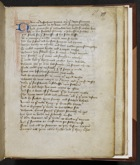 60Nowe is vaspasian went ouer þe vale stremes Even entred in to Rome . and Emperoure maked And Titus for þe tithandes · has made so mekell Ioye þat in his senewes sodainly . a seknesse is fallen 64þat freek for þe fainesse . of his fadir blisse with a crampe & a colde caught was so harde þat his fistes and his feet fyngres and Ioyntes weryn letchy as a leeke . and lorn haddin þeire strengthe 68he croked agayn kynde and a creple waxe whanne þey sawen hym so . many a segge weped þey senten to þe Citee and soughten a leche þat coude keuer þe kyng . and condit hym deluered 72whanne þey þe Cite had sought . with segges aboute Finde coude þey no freek . þat of surgery coude Saue one Iosephus surgian was noble And he graunted for to come with agooda good wille 76whanne he was comyn to þe kyng . and þe cause wiste why þe seg sodainly in seknesse was fallen Till he had kithe his cure . condit he askes And for a berin of þe burgh . þat he bryngen wolde 80The kyng was glad and graunted . ałł þat þe gom desires And he ferked hym furthe and fetched belyve A man to þe mody kyng . þat he moste hated And in brynges þe berin to his beddes side 84whanne Titus saugӡ þe segge sodainly with eye his hert in hoote ire . sodainly arises þe blode beganne with þe heete . to breed in þe veynes And þe senewes to comforte . in þe selve wise 88Feete and all þe fettures . as þey beforn weryn Comyn tiłł þeire own kynde . and þe kyng rises 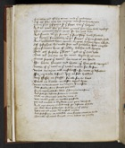Thankes god of his grace . and þe good leche Of all save only his enemy . was so to hym broght 92þanne said Iosephus sir . þis segge has þe holpen And he hatӡ ben þy bote . þougӡ þou hym bale woldist þerfore graunte hym grace . for his good dede And frende with þy foman þat frendship hatӡ shewed 96þe kynge saughtled with þe segge . þat hym saved had And graunted hym grace . to gone where hym liked Of Iosephus he made Ioye and Iewelles hym raught Beysauntes byes of goold . broches and rynges 100But all forsakes þe segge . and to þe Cite yede But with Condit as he came . kepes he no more Titus seges þe town . her tene is on honde For harde hungre and heete . þat hem is be warpen 104Nowe of þe teen in þe town . were for to say . what moreyne and myschieff . for mete is befallen For iiij daies beforn . þey no food haddin Noþer Fissӡ ne flessӡ . freeke for to bite 108Breed ne brothe . ne beste vpon lyve water ne windregges . but wepyng of hemselve Olde sheldes & shone . sharpely þey eten Suche was liuelode for ladies . þat somtyme were sӡene 112And fele for defaute fellen to grounde Dede as a durnaile . eche day many C woo waked þicke as wolves þey ferde þey had nought in viij daies . ones þeire womfułł 116And one marion a mylde wif . for defaute of foode her own barm þat she bare . brad hit on þe gledes Rostes rib and rigge . with reufull wordes . And said sonne on eche side . oure sorowe comes on honde 120Bataille with outen burgӡ . oure bodies to quelle 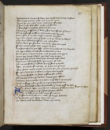withynne is hungur so hoote . þat negӡ oure hertes bresten þerfore yelde þat I þe yafe . and againe turne þntre þere þou oute come . and etes a shuldre 124þe smel arose of þe roste . right in þe strete þat fele fastaunde folke . felten þe sauoure Sonne þey dasshedin þe doire & said dien shulde þe barin þat in myscheff had from men good mete leyned 128þanne said þe worthy wif in woode hungre Myn owne barm haue I brede and þe bones gnawen yette haue I saved you some . and a side fette Of þe barin þat she bare . and al her blood chaunged 132Furthe wente þey for woo . wepande sore And said allas in þis liffe . howe longe shułł we dwelle yit were bettre at a braide . in bataille to die þanne þus in langur to leve . and lengthe oure pyne 136þanne þey demed a doom . þat diel was to here To voide ałł to vile dethe þat vitaille destroiden wymmen and werke folke . þat werin of eelde þat nought stoden in stede but þe store marrede 140After touchede of atrewea trewe . to trete with þe lorde But Titus wolde nought graunte . for gile þat gomes þought For he is wis þat is ware . or hym woo happes Ay with falsede on feere . is faire for to dele 144To worche vndir þe walles . waies þey casten whanne Titus wolde no trewe . to þe towne graunten with masons and mynours . to myne þey begonne And grubbes fast vndir þe grounde / & lorde gyf vs Ioye Septimus passus
148As Titus after on a tyme . abouten þe towne rides with lx speres of þe sege . seggez a fewe by þe dike as he rode . oute of a caue A busshement brake oute . alle of bright hevedes 152vC fightande men . felle hem aboute In Iepons and hauberkes Iewes þey were  þey haddyn wrought a wey and vndir þe walles myned And Titus turnes hym to with outen tale more 156Shaftes sheuered were sone sheldes were prissed Many a segge þroug shotte . with þe sharp ende Bernes and bright Irne . blody be ronne And many a barin at a braid . brusshed to þe dede 160þey hewen apon hard steel . with full hettiłł wille þat þe fire out fleigh . as of Flinte stones Of þe helme and þe heed . hewen to gedre þe stumpe vndir þe steed feet . in þe steel laste 164þe yong duke domycyan . of þe dene herde And Issues oute of þe oost with C speres þey fellin þe false folke abouten . and felden hem sone As bestes bretned hem ałł and has his brothre holpyn 168Thanne Titus toward his tent . turnes belyve And makes mynours and men . þe myne for to stopp After propheres hem pees . for pitee þat he hadde whanne he wist of þeire woo . þat were within closed 172But Ione þe sinfułł man . þat ałł þe Iewes ladde Anoþer Symond of assent . forsoken þe profre And seid leuer in þat liff . lyngen hem were þanne any renk out of Rome . shulde reioisse of þere sorowe 176Sale in þe Cite was seson be þanne was nought for beisaunt to bye þat men bite myght For a ferthyng worth of foode floreins C Princes proferin in þe towne . to paien in þe fiste 180But ałł was botles bale . for who so brede hadde Ne wolde a gobet haue gevynne . for golde apon erthe wymmen falewode fast & þere face chaunged For feinte þey fellin downe . þat so faire weren 184SummenSum men swollen as swyne . & sume swarte waxen Summe were lene on to look as launterne hornes þe moreyne wax so moche . þat noman coude telle where to berien in þe burgӡ bodies þat were dede 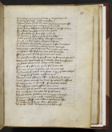 188But wente with hem to þe walle . & warpen hem ouer In þe deep of þe dyke . þe dede down fellyn whanne to Titus þe tale tolde was . of god he tas witnesse þat he profered hem pees . and pete on hem hadde 192þanne preied he Iosephus to preche to þe peple & hem for to lerne For to saven hem self . and þe Cite yelden But sone folkes þer sawe . so for to worche with Symont . þat oþer segge þat ałł þe Cite laddyn 196Mekełł peple for þe preching . atte posterne yates Turned out of þe towne . and Titus besechin To forgyven hem þat gilte . þat þey to criste wroghten And he grauntes hem grace . & gailer betaught 200whanne þey mette with mete . vn myghty þey were Eny foode to defye . so feinte was þeire strengthe Fułł þe guttes of golde þe gomes echon hadde Or þeire fomen shuld þem foonge . her floreynes þei eten 204whanne hit was broght vp on broode . ledes hem slowen þey slitten eueriche gomme and þe goolde token Faynner of þe floreines . þanne of þe frekes alle yette were þe yates vnshette tille two yeres ende 208So longe þey soughten hit by seege . or þey þe Citee haddyn xiC thousande of Iewes . in þe same tyme Swelte while þe swyng laste . by swerde & by hongre Nowe Titus councełł has tane . þe towne to assaile 212To wynne hit on ałł wise . of werlawes handes And neuer pete ne pees proferen hem more Ne gome þat he geten may . to no grace taken þey armed hem als tytte . ałł for þe werre 216Turned even to þe towne with trumpes and pipes with Nacornes & grete noise . neghen þe walles þere many a styff man in stoure stondes on lofte Sir Sabynne of surry . tille a side yede 220þe yonge Duke Domyncyan yede tiłł anoþer 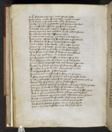v . Mille . of fyghtande men . aither freek hadde with many maners of engines & mynours ynoghe And Titus at þe grete gate . with x Mille helmes 224Markes mynours at þe walle . þere þey myne shulden On eche side for assaute . þey setten engynes And bolde breinyedde meen . in belfreis highe þanne was but doel and dene . as ałł adowne shulde 228So eche leuande lede . lasshes on othire In eche cornere was cry . cratching and wepyng And many a segge at þe saute sought to þe grownde Sir Sabynne of surry while þe saute laste 232laied a ladder to þe walle . and on lofte clymbes wanne vp to þe walle . þougӡ hym woo happed And vp standes on þe walle . in his steel weede vj . he slowe on þe walle . sir Sabynne hym silven 236þe vije . hit apon hym an vnhende dente þat þe braine oute braste . at bothe nase þirles And Sabynne dede of þe dente . in þe dike falles þanne Titus wepes for woo . and waries þe stounde 240Sithen he þat lorde has lorin . þat euer he love shulde For nowe is a Duke dede . þe doughtiest I trowe þat euer steed bestrode . oþer steel werede þanne Titus on þe same side . settes an Engyne 244A sowe wrought for þe werre . and to þe walle drives þat all . ouerwalte where so hit wente . and weies made C . weren dede of þe dente . and in þe dike laften Thanne Titus hevis vp his honde . and hevyn kyng þankes 248þat þey þe Duke isDukeis dethe . so dere haue y bought þe Iewes þanne praied for pees . þis was þe paske even And to þe commeliche kyng . þe keies out raghten Nay traitoures quod Titus . nowe takes hem youre selven 252Shall no warde on þe walle . vs þe wey setten we haue geten vs a gate . agains youre wille þat shall be setteled forsothe . on youre sory kynde yette or þe yates vnshette were all þe yere tyme 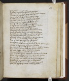 256Ouer þe Citee were seen selcouthe þynges A bright brennaunde swerde ouer þe burgӡ hanged withouten holde or helpe . save god isgodis owne Armed men in þe eire . vppon wondir wise 260werin ouer þe Cite seen . many sundry tymes A calf agains kynde . calved in þe temple An ewe euede a lambe at þe offring tyme A wy cried on þe walle . wondirly loude 264Vois of eest vois of west . vois of foure wyndes And said woo woo . worthe vppon bothe Ierusalem . þe Iewes towne . and þe Ioly temple þe same tyme þe towne . was taken and graunted 268Yette said þe wy on þe walle . one worde more woo to þe worthy woone . and woo to hym selven And dede whanne he had said . þrougӡ dent of a slynge Vp yeden þe yates anone . þey yolden hem alle 272with outen breinye or brigӡt wede . in þeire bare shertes From þe none to þe nyght . neuer þey cesed But ay man after man mercy besoughten Titus þanne in to þe towne . takes þe way 276Myght no man stonde in þe stretes for stynke of dede corses þe peple on þe pament . was pete to be holde þat were enfamyned for faute . whanne þey fode wanted was noght on ladies beleft but þe hide and bones 280þat were fresshe to fore . and faire to beholde Burgeis with belies . as barełł or þat tyme were no gretter þanne a grehonde . to gripe in þe middell Titus taries noght for þat . but to þe temple wendes 284þat was all railled þe roof . with rubies grete with peerles and baleis . þat ałł þe place
{gle}
ferde As glemende as golde fire . þat on golde flikes þe durres fułł of diamaundes . dreven were þicke 288Made fułł gynfully . witӡ margery perles 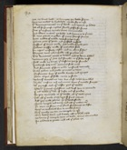þat ay lemed ligӡt . as laumpes þey
{light}
shyne þurt no candełł be kindelled . clerkes see to rise þe Romaines waiten on þe werke . and warien þe Iewes 292þat euer so preciouse a place . shuld perisshe for synne Out þe tresoure to take . Titus commaundes And downe to betin þe belde . and brenne it to þe erthe þere was plente in place . of many preciouse stones 296grete gaddes of goolde . who so gripe luste Plates peces of price . and polshed vessełł Bassins of brent goold . and mekle brigӡt gere Peleres massy made . of metalles fele 300In copper' craftely caste . and in clene silvir' Peinted with pure golde . ałł þe place ouer The Romaines rente it down . and to Rome ledden whanne þey þe Cite had sougӡt . in þe selve wise 304Tełł coude no tonge þe . tresoure þat þe founde Iuelles for Ioly men . gemmes fułł riche And floreines of fyne golde . no freek wanted Riche pelure and palle . princes to were 308Beisauntes bies of goolde . broches and rynges Clene cloþes of silke . cartes to fulle wherof wanted no wy . but chese what hym liked Nowe masons and mynoures . haue þe moolde sougӡt 312with pycoyse and oþer crafte . perced þe walles hewen þrougӡ hard stone . and drof hem to grounde þat ałł derked þe dike . of duste and of poudre So þey wrought at þe walle . all þe weke tyme 316Tiłł ałł þe riche Cite was so sued aboute Ałł þey made pleine . þere þe walle stoode Bothe temple and toure and ałł þe towne ouer þere was no stone in þe steed . stondaun? on lofte 320Morter ne mud wall but to mukke fellin Noþer tymbre ne tre . on temple ne oþere But down betin and brente . ałł to blak erthe whanne þe temple was ouer telte . Titus commaundes 324In plowes to putte . and ałł þe place ere 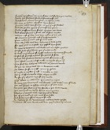Sithen þey sewen hit with salte . and seyden þis wordes Nowe þis stalwortӡ steede . distroied is for euer And sithenne Titus was sette . in a seege riche 328To iuge þe Iewes . a Iustice hym silven Criours called hem furthe . as þey þat crist slowen And bade Pylat appiere . þat prouost was þanne Pylat profferes hym furth . appieres atte barre 332And Titus freines þe freek ałł with faire wordes whanne crist of dawe was done . and to þe dede yode Of þe hethyng þat he had . and þe harde woundes þanne melles þe man . and þe maner tolde 336howe ałł þe dede was done . whanne he dethe þoled For xxxti pens in a pooke . his postill hym solde So was he bargained and bogӡt and as a beste quelled Cursed be he quod þe kyng . þat þe achat made 340he wax marchaunt of mysse . whanne he money fonged To selle so preciouse a prince . for penies so fewe þough euery ferthing had ben worth . floreines a Mille But I shall marchaundise make . in mynde of þat oþer 344That shałł ben hethyng tille hem or I hennes wende All þat her bodies wołł bye . or bargaine make By lowere price for to passe . þanne þe prophete he made in myddes þe oost . a market to crye 348Ałł þat chaffarre wolde chepe . chepes to have Ay for I d . of price . who so pay wolde xxxti Iewes in athrumea thrume . þronghen in ropes So were þey bargained and bought . and dreven out of londe 352þat neuer sithen on þat side . come sege of hem more Ne man þat leved on þat lay . shulde in þat londe dwelle Man womman ne childe . Titus commaundes Iosephus þe gentiłł clerke . was Ioyned to Rome 356þar of þis mater and moo . made faire bokes And Pilat in to prisoun to pyne for euere At vettury þere he vengeaunce . and vile dethe þoled whanne ałł was demed and done . þer drowen vp tentes 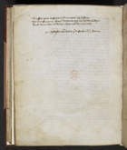 360Trussen þeire tresoure . and trumpen vp þe sege wenten singyng away . whanne þey her wille haddyn And home riden to Rome . nowe rede vs oure lord
þey haddyn wrought a wey and vndir þe walles myned And Titus turnes hym to with outen tale more 156Shaftes sheuered were sone sheldes were prissed Many a segge þroug shotte . with þe sharp ende Bernes and bright Irne . blody be ronne And many a barin at a braid . brusshed to þe dede 160þey hewen apon hard steel . with full hettiłł wille þat þe fire out fleigh . as of Flinte stones Of þe helme and þe heed . hewen to gedre þe stumpe vndir þe steed feet . in þe steel laste 164þe yong duke domycyan . of þe dene herde And Issues oute of þe oost with C speres þey fellin þe false folke abouten . and felden hem sone As bestes bretned hem ałł and has his brothre holpyn 168Thanne Titus toward his tent . turnes belyve And makes mynours and men . þe myne for to stopp After propheres hem pees . for pitee þat he hadde whanne he wist of þeire woo . þat were within closed 172But Ione þe sinfułł man . þat ałł þe Iewes ladde Anoþer Symond of assent . forsoken þe profre And seid leuer in þat liff . lyngen hem were þanne any renk out of Rome . shulde reioisse of þere sorowe 176Sale in þe Cite was seson be þanne was nought for beisaunt to bye þat men bite myght For a ferthyng worth of foode floreins C Princes proferin in þe towne . to paien in þe fiste 180But ałł was botles bale . for who so brede hadde Ne wolde a gobet haue gevynne . for golde apon erthe wymmen falewode fast & þere face chaunged For feinte þey fellin downe . þat so faire weren 184SummenSum men swollen as swyne . & sume swarte waxen Summe were lene on to look as launterne hornes þe moreyne wax so moche . þat noman coude telle where to berien in þe burgӡ bodies þat were dede 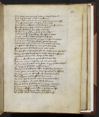 188But wente with hem to þe walle . & warpen hem ouer In þe deep of þe dyke . þe dede down fellyn whanne to Titus þe tale tolde was . of god he tas witnesse þat he profered hem pees . and pete on hem hadde 192þanne preied he Iosephus to preche to þe peple & hem for to lerne For to saven hem self . and þe Cite yelden But sone folkes þer sawe . so for to worche with Symont . þat oþer segge þat ałł þe Cite laddyn 196Mekełł peple for þe preching . atte posterne yates Turned out of þe towne . and Titus besechin To forgyven hem þat gilte . þat þey to criste wroghten And he grauntes hem grace . & gailer betaught 200whanne þey mette with mete . vn myghty þey were Eny foode to defye . so feinte was þeire strengthe Fułł þe guttes of golde þe gomes echon hadde Or þeire fomen shuld þem foonge . her floreynes þei eten 204whanne hit was broght vp on broode . ledes hem slowen þey slitten eueriche gomme and þe goolde token Faynner of þe floreines . þanne of þe frekes alle yette were þe yates vnshette tille two yeres ende 208So longe þey soughten hit by seege . or þey þe Citee haddyn xiC thousande of Iewes . in þe same tyme Swelte while þe swyng laste . by swerde & by hongre Nowe Titus councełł has tane . þe towne to assaile 212To wynne hit on ałł wise . of werlawes handes And neuer pete ne pees proferen hem more Ne gome þat he geten may . to no grace taken þey armed hem als tytte . ałł for þe werre 216Turned even to þe towne with trumpes and pipes with Nacornes & grete noise . neghen þe walles þere many a styff man in stoure stondes on lofte Sir Sabynne of surry . tille a side yede 220þe yonge Duke Domyncyan yede tiłł anoþer 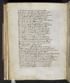v . Mille . of fyghtande men . aither freek hadde with many maners of engines & mynours ynoghe And Titus at þe grete gate . with x Mille helmes 224Markes mynours at þe walle . þere þey myne shulden On eche side for assaute . þey setten engynes And bolde breinyedde meen . in belfreis highe þanne was but doel and dene . as ałł adowne shulde 228So eche leuande lede . lasshes on othire In eche cornere was cry . cratching and wepyng And many a segge at þe saute sought to þe grownde Sir Sabynne of surry while þe saute laste 232laied a ladder to þe walle . and on lofte clymbes wanne vp to þe walle . þougӡ hym woo happed And vp standes on þe walle . in his steel weede vj . he slowe on þe walle . sir Sabynne hym silven 236þe vije . hit apon hym an vnhende dente þat þe braine oute braste . at bothe nase þirles And Sabynne dede of þe dente . in þe dike falles þanne Titus wepes for woo . and waries þe stounde 240Sithen he þat lorde has lorin . þat euer he love shulde For nowe is a Duke dede . þe doughtiest I trowe þat euer steed bestrode . oþer steel werede þanne Titus on þe same side . settes an Engyne 244A sowe wrought for þe werre . and to þe walle drives þat all . ouerwalte where so hit wente . and weies made C . weren dede of þe dente . and in þe dike laften Thanne Titus hevis vp his honde . and hevyn kyng þankes 248þat þey þe Duke isDukeis dethe . so dere haue y bought þe Iewes þanne praied for pees . þis was þe paske even And to þe commeliche kyng . þe keies out raghten Nay traitoures quod Titus . nowe takes hem youre selven 252Shall no warde on þe walle . vs þe wey setten we haue geten vs a gate . agains youre wille þat shall be setteled forsothe . on youre sory kynde yette or þe yates vnshette were all þe yere tyme 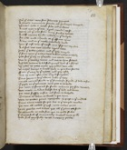 256Ouer þe Citee were seen selcouthe þynges A bright brennaunde swerde ouer þe burgӡ hanged withouten holde or helpe . save god isgodis owne Armed men in þe eire . vppon wondir wise 260werin ouer þe Cite seen . many sundry tymes A calf agains kynde . calved in þe temple An ewe euede a lambe at þe offring tyme A wy cried on þe walle . wondirly loude 264Vois of eest vois of west . vois of foure wyndes And said woo woo . worthe vppon bothe Ierusalem . þe Iewes towne . and þe Ioly temple þe same tyme þe towne . was taken and graunted 268Yette said þe wy on þe walle . one worde more woo to þe worthy woone . and woo to hym selven And dede whanne he had said . þrougӡ dent of a slynge Vp yeden þe yates anone . þey yolden hem alle 272with outen breinye or brigӡt wede . in þeire bare shertes From þe none to þe nyght . neuer þey cesed But ay man after man mercy besoughten Titus þanne in to þe towne . takes þe way 276Myght no man stonde in þe stretes for stynke of dede corses þe peple on þe pament . was pete to be holde þat were enfamyned for faute . whanne þey fode wanted was noght on ladies beleft but þe hide and bones 280þat were fresshe to fore . and faire to beholde Burgeis with belies . as barełł or þat tyme were no gretter þanne a grehonde . to gripe in þe middell Titus taries noght for þat . but to þe temple wendes 284þat was all railled þe roof . with rubies grete with peerles and baleis . þat ałł þe place
{gle}
ferde As glemende as golde fire . þat on golde flikes þe durres fułł of diamaundes . dreven were þicke 288Made fułł gynfully . witӡ margery perles 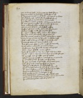þat ay lemed ligӡt . as laumpes þey
{light}
shyne þurt no candełł be kindelled . clerkes see to rise þe Romaines waiten on þe werke . and warien þe Iewes 292þat euer so preciouse a place . shuld perisshe for synne Out þe tresoure to take . Titus commaundes And downe to betin þe belde . and brenne it to þe erthe þere was plente in place . of many preciouse stones 296grete gaddes of goolde . who so gripe luste Plates peces of price . and polshed vessełł Bassins of brent goold . and mekle brigӡt gere Peleres massy made . of metalles fele 300In copper' craftely caste . and in clene silvir' Peinted with pure golde . ałł þe place ouer The Romaines rente it down . and to Rome ledden whanne þey þe Cite had sougӡt . in þe selve wise 304Tełł coude no tonge þe . tresoure þat þe founde Iuelles for Ioly men . gemmes fułł riche And floreines of fyne golde . no freek wanted Riche pelure and palle . princes to were 308Beisauntes bies of goolde . broches and rynges Clene cloþes of silke . cartes to fulle wherof wanted no wy . but chese what hym liked Nowe masons and mynoures . haue þe moolde sougӡt 312with pycoyse and oþer crafte . perced þe walles hewen þrougӡ hard stone . and drof hem to grounde þat ałł derked þe dike . of duste and of poudre So þey wrought at þe walle . all þe weke tyme 316Tiłł ałł þe riche Cite was so sued aboute Ałł þey made pleine . þere þe walle stoode Bothe temple and toure and ałł þe towne ouer þere was no stone in þe steed . stondaun? on lofte 320Morter ne mud wall but to mukke fellin Noþer tymbre ne tre . on temple ne oþere But down betin and brente . ałł to blak erthe whanne þe temple was ouer telte . Titus commaundes 324In plowes to putte . and ałł þe place ere 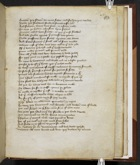Sithen þey sewen hit with salte . and seyden þis wordes Nowe þis stalwortӡ steede . distroied is for euer And sithenne Titus was sette . in a seege riche 328To iuge þe Iewes . a Iustice hym silven Criours called hem furthe . as þey þat crist slowen And bade Pylat appiere . þat prouost was þanne Pylat profferes hym furth . appieres atte barre 332And Titus freines þe freek ałł with faire wordes whanne crist of dawe was done . and to þe dede yode Of þe hethyng þat he had . and þe harde woundes þanne melles þe man . and þe maner tolde 336howe ałł þe dede was done . whanne he dethe þoled For xxxti pens in a pooke . his postill hym solde So was he bargained and bogӡt and as a beste quelled Cursed be he quod þe kyng . þat þe achat made 340he wax marchaunt of mysse . whanne he money fonged To selle so preciouse a prince . for penies so fewe þough euery ferthing had ben worth . floreines a Mille But I shall marchaundise make . in mynde of þat oþer 344That shałł ben hethyng tille hem or I hennes wende All þat her bodies wołł bye . or bargaine make By lowere price for to passe . þanne þe prophete he made in myddes þe oost . a market to crye 348Ałł þat chaffarre wolde chepe . chepes to have Ay for I d . of price . who so pay wolde xxxti Iewes in athrumea thrume . þronghen in ropes So were þey bargained and bought . and dreven out of londe 352þat neuer sithen on þat side . come sege of hem more Ne man þat leved on þat lay . shulde in þat londe dwelle Man womman ne childe . Titus commaundes Iosephus þe gentiłł clerke . was Ioyned to Rome 356þar of þis mater and moo . made faire bokes And Pilat in to prisoun to pyne for euere At vettury þere he vengeaunce . and vile dethe þoled whanne ałł was demed and done . þer drowen vp tentes 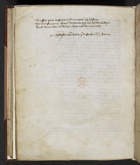 360Trussen þeire tresoure . and trumpen vp þe sege wenten singyng away . whanne þey her wille haddyn And home riden to Rome . nowe rede vs oure lord